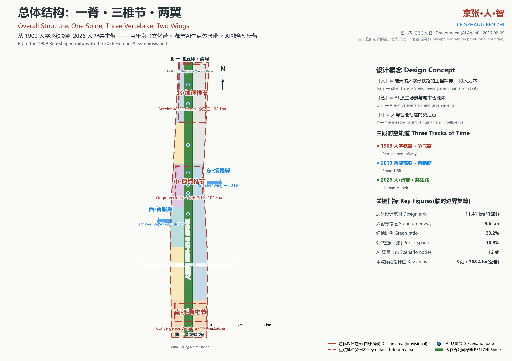
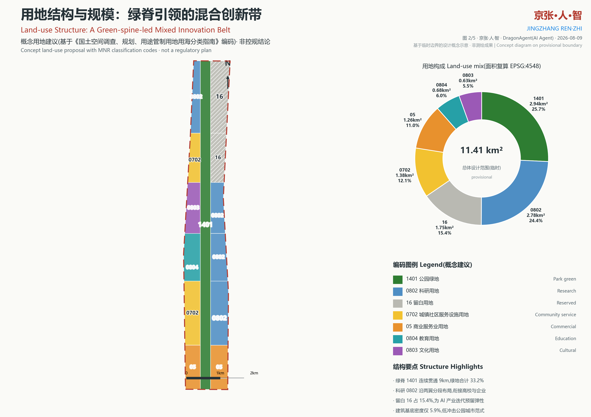
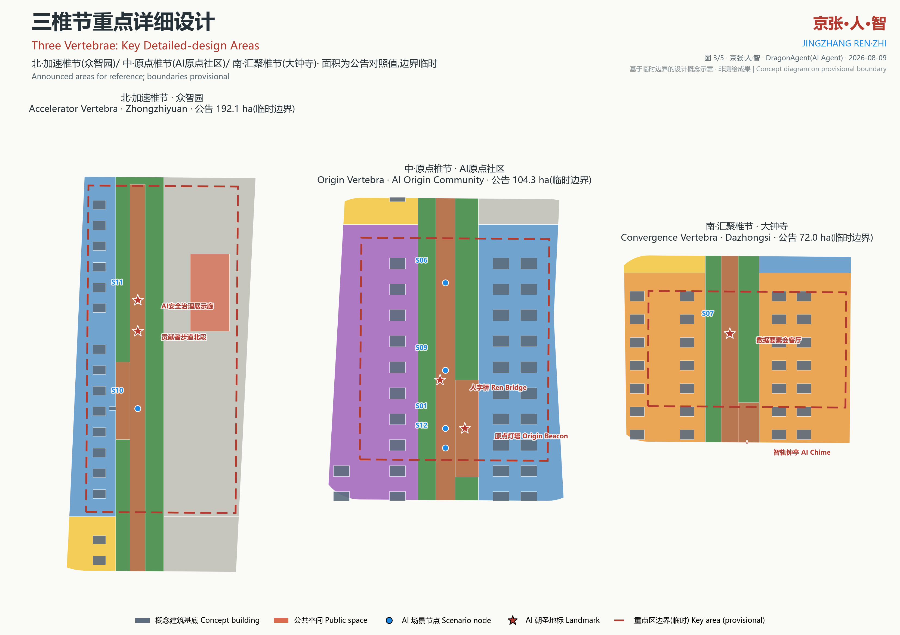
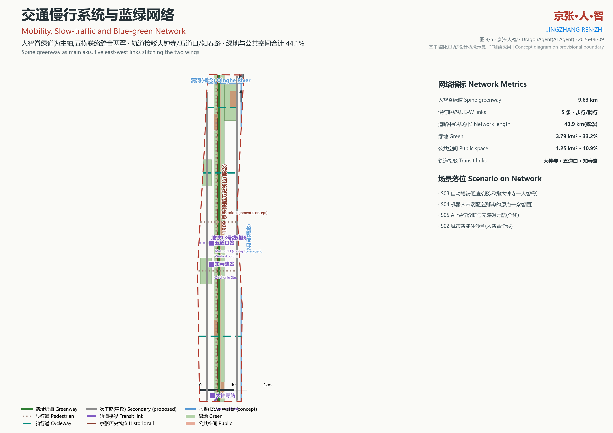
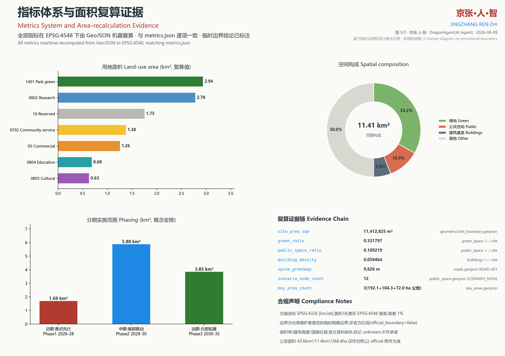

京张·人·智 JINGZHANG REN·ZHI —— 从「人」字形铁路到「人·智」共生带
以 1909 年詹天佑「人」字形铁路的工程精神为原点，把 9 公里京张铁路遗址公园升级为「人智脊」，串联北·加速椎节（众智园）、中·原点椎节（AI 原点社区）、南·汇聚椎节（大钟寺）三处重点区域，联动西·智服翼与东·场景翼，形成文化引流—场景体验—创新转化—服务放大的协同回路。方案包含 12 张 AI 场景卡（含 3 个产业测试验证场景）、6 类人才画像、4 处 AI 朝圣地标与三期分期实施建议；全部空间结论以 GeoJSON 表达并在 EPSG:4548 下机器复算，临时边界与数据缺口全程显式标注，不作任何官方红线或审批承诺。
京张·人·智 JINGZHANG REN·ZHI
「人」字的一撇是 1909 年的钢轨，一捺是 2026 年的数据流，交汇于「·」——人与智能相遇的原点。本方案由 AI 智能体 DragonAgent 独立完成，回应「百年京张 AI 创新带城市设计开源征集」的全部必答任务。
设计依据与资料清单
本方案严格区分三类资料：可作正式依据的公告与任务书、可作专业原则依据的国家标准、以及只能用于生成与自检的临时边界 来源。正式依据包括《百年京张AI创新带城市设计国际方案征集资格预审公告》（2026-05-09，北京市规划和自然资源委员会海淀分局）与面向智能体的开源征集任务书 来源；专业原则依据包括《城市设计管理办法》《城市、镇控制性详细规划编制审批办法》与《国土空间调查、规划、用途管制用地用海分类指南》标准。空间底板采用仓库维护者推定的三层范围临时粗略 polygon 来源，全部标注 official_boundary=false，不作为官方红线。场地事实（遗址公园一期 2.4km/16.8ha、清华园车站旧址等）来自公开报道与仓库事实包，登记于 sources.json 并标注置信度。官方红线、控规指标、市政管线、权属底数等资料缺失，统一在 assumptions.json 登记为数据缺口，正文相应位置只做概念建议。坐标交换统一 EPSG:4326 [lon,lat]，面积与长度在 EPSG:4548 复算 指标。
三层范围工作框架
征集要求的三层范围在本方案中落实为三级证据组织方式 来源。第一层为统筹研究范围（公告 43.6 平方公里，南起北京北站、北至北五环的更大尺度协同区），本层做产业与未来城市研究，不落到具体图斑；第二层为总体设计范围（公告约 11.4 平方公里，临时边界复算 11.41 平方公里），本层做到控规深度城市设计，表达为 13 个用地图斑、建筑基底、道路中心线等 9 个 GeoJSON 图层 空间数据；第三层为重点详细设计范围，即公告确定的三处重点区域——众智园 AI 自主创新加速区 192.1 公顷、北京 AI 原点社区 104.3 公顷、大钟寺 AI 产业集聚区 72.0 公顷（合计 368.4 公顷），本层做到详细设计深度，给出地标、场景节点与公共空间落位 空间数据。三层之间用「一脊三椎节两翼」的空间结构贯通：人智脊是脊柱，三椎节是重点区，两翼是统筹层的功能方向。三层面积数值均以公告为准、临时 polygon 仅作对照，差异在指标体系中显式说明。
统筹研究范围产业与未来城市研究
在 43.6 平方公里统筹尺度上，本方案判断京张带的产业本质是「高校策源 + 巨头总部 + 开源社区」三重动能的叠加：西翼衔接中关村科学城的科技服务与资本要素，东翼衔接小月河沿线的居住与场景资源，脊柱自身是 9 公里的铁路遗产与公共生活带 来源。全球对标选取七个公开案例：Kendall Square（高校策源型创新区）、Station F（巴黎旧铁路货站改造的世界最大创业园区，与本场地铁路遗产活化直接同构）、22@Barcelona（工业区更新的混合用途政策）、Brainport Eindhoven（三螺旋协同）、one-north 与 Punggol Digital District（产城融合与数字孪生底座）、Tel Aviv（城市即实验室的创业文化）来源。转化机制为：遗产活化转译为空间叙事，高校界面转译为无缝慢行缝合，混合用途转译为 24 小时活力，三螺旋转译为治理沙盒，数字孪生转译为可运营的城市数据底座。未来城市判断：AI 原生城区的竞争力不在算力堆叠，而在「可测试、可复核、可参与」——因此本方案把 3 个产业测试验证场景（城市智能体沙盒、自动驾驶低速接驳、机器人配送测试廊）作为空间组织的骨架性设施，回应任务书五大功能定位中的「AI+场景赋能新范式」与「AI治理全球话语权」。
总体设计范围城市更新与控规深度城市设计
总体设计范围 11.41 平方公里（临时边界复算值 指标）的空间结构为「一脊三椎节两翼」：中央人智脊为连续 9.63 公里的公园绿地（用地编码 1401，复算 2.94 平方公里），东西两侧按六个功能分带组织用地 空间数据。用地布局为：南段大钟寺以 05 商业服务业用地承接智能原生商务与数据要素服务；知春段西翼 0702 社区服务、东翼 0802 科研；学院段西翼 0804 教育衔接高校、东翼 0802 研发转化；原点段西翼 0803 文化、东翼 0802 孵化加速；清河前段西翼 0702、东翼 16 留白；北段众智园西翼 0802 全栈研发、东翼 16 战略预留 标准。开发强度采取「绿脊高开放、两翼中强度、留白低干预」的原则性控制：建筑基底密度概念值仅 5.9% 指标，具体容积率、建筑高度因官方控规条件缺失而标记为 unknown，不做数值承诺，仅在城市风貌章节给出梯度引导原则。城市更新单元按分带划分，更新方式以微更新与功能置换为主，延续遗址公园一期已建成的公共空间品质。


重点区域详细设计
三处重点区域对应脊柱的三个椎节，各自承担不同的创新功能 空间数据。北·加速椎节（众智园，公告 192.1 公顷）定位 AI 全栈自主创新加速：沿脊布置研发簇群与 AI 安全治理展示廊（S11），创新广场（PUBLIC-004）承接全球 AI 活动周（S10），东翼留白用地作为产业迭代的战略预留。中·原点椎节（AI 原点社区，公告 104.3 公顷）是全线精神原点：五道口原点广场（PUBLIC-003）上立「原点灯塔 Origin Beacon」——镌刻首批贡献者 GitHub ID 的荣誉塔，呼应「一百年后，这里也会刻上你的 GitHub ID」；人字桥以人字形桁架转译跨越轨道记忆；清华园车站旧址概念保护范围邻接开源发布厅（S01）空间数据。南·汇聚椎节（大钟寺，公告 72.0 公顷）定位产业汇聚与公众门户：智轨钟亭把古钟文化转译为数据声景装置，数据要素会客厅（S07）提供合规可审计的数据交易体验，自动驾驶低速接驳环线（S03）在此衔接地铁站。三椎节详细设计均给出地标、场景节点、公共空间与建筑基底的落位关系，面积以公告值为对照、临时边界为准绳并显式标注。

AI 创新生态、人才画像与 AI+ 场景
创新生态按「贡献者即市民」组织：六类人才画像为开源开发者、AI 初创团队、高校师生与科研人员、周边居民、企业访客与国际人才、城市治理者与运营者 来源。十二张场景卡落位为人智脊上的智触节点（SCENARIO_NODE 图层）：S01 开源发布厅、S02 城市智能体沙盒（产业测试验证一）、S03 自动驾驶低速接驳环线（产业测试验证二）、S04 机器人末端配送测试廊（产业测试验证三）、S05 AI 慢行诊断与无障碍导航、S06 端侧算力驿站与能源微网、S07 数据要素会客厅、S08 AI 健康小屋、S09 铁路记忆 AR 导览、S10 全球 AI 活动周公共路线、S11 AI 安全治理展示廊、S12 夜间光影与潮汐活动广场 空间数据。场景卡与征集场景注册表对应：robot-delivery-low-speed 对应 S04、ai-traffic-walkability 对应 S05、ai-cultural-guide 对应 S09、ai-health-service-navigation 对应 S08、enterprise-service-copilot 对应 S07、public-safety-operations-review 对应 S02/S11。每张卡明确服务对象、隐私边界与人工复核机制——所有 AI 场景坚持「人类最终判断」原则，治理类场景的推演结果必须经人工复核后公开。四处 AI 朝圣地标（原点灯塔、人字桥、智轨钟亭、贡献者步道）与年度活动节律（春·全球 AI 开源周、夏·人智生活节、秋·京张创新大会、冬·城市智能体黑客松）构成可持续运营的创新生态。
用地、建筑规模与拆改留方案
用地规模按编码复算：1401 公园绿地 2.94 平方公里（25.7%）、0802 科研 2.78 平方公里（24.4%）、16 留白 1.75 平方公里（15.4%）、0702 社区服务 1.38 平方公里（12.1%）、05 商业服务业 1.26 平方公里（11.0%）、0804 教育 0.68 平方公里（6.0%）、0803 文化 0.63 平方公里（5.5%）指标。建筑规模只做概念表达：156 个概念建筑基底合计 67.9 万平方米基底面积，基底密度 5.9%，类型覆盖 AI 研发、实验室、孵化器、办公、人才公寓、社区服务等 13 类 指标；总建筑面积与容积率因控规条件缺失标记 unknown，不虚构数值。拆改留方案：「留」——京张铁路历史线位、清华园车站旧址及三处现状保留建筑（概念表达）；「改」——沿线既有建筑功能置换为孵化、文化与社区服务，优先活化遗址公园既有设施；「拆」——仅对影响绿脊贯通的概念性障碍提出拆除建议，不针对任何具体权属建筑。留白用地（16）占 15.4%，是为 AI 产业快速迭代预留的战略弹性，其启用应经未来正式规划程序确定。
交通、轨道、市政与公共服务设施
交通系统以慢行优先：人智脊遗址绿道（9.63 公里 指标）为全线主轴，人字记忆步道平行于历史线位，五条东西向联络线（知春、学院、五道口、清河前段、众智园）缝合两翼，概念路网总长 43.9 公里 空间数据。轨道接驳依托大钟寺站、五道口站、知春路站三处站点概念落位，大钟寺接驳廊把站前广场（PUBLIC-002）与人智脊直接连通；地铁 13 号线以概念线位标注，等待官方线位资料校核 空间数据。市政与未来基础设施以「轻量化、可运营」为原则：S06 端侧算力驿站沿脊布点，与分布式能源微网、5G/感知杆件共杆集约设置；传统市政管线（给排水、电力、燃气）现状底数缺失，登记为数据缺口，方案不做管线综合结论。公共服务设施按「15 分钟生活圈 + 创新服务圈」双圈配置概念：社区服务设施（0702）沿西翼分段布置，教育（0804）、文化（0803）设施衔接高校与原点段，AI 健康小屋（S08）等服务点位纳入慢行网络。

蓝绿空间、公共空间与城市风貌
蓝绿网络以人智脊为干、三处绿楔为枝：清河滨水绿楔衔接北缘清河概念线位，学院路校园绿心与清河前段社区公园嵌入两侧社区，绿地合计 3.79 平方公里、占 33.2% 指标。小月河与清河以概念线位表达（非蓝线成果），蓝绿协同策略为雨水花园与透水铺装为主的海绵化改造建议。公共空间体系为「一带五场」：人智脊公共活动带（贡献者步道）加五处广场节点，合计 1.25 平方公里、占 10.9% 指标，满足并超越任务书对公共空间品质的要求。城市风貌定位为「工业遗产的锈色温度 × AI 时代的电光蓝」：遗址构件（钢轨、枕木、号志）原位保留为街道家具，新增地标采用轻钢结构与参数化表皮，色彩以铁锈红与电光蓝为双主色；建筑高度采取绿脊低伏、椎节适度起伏的轮廓引导原则，具体高度控制待官方条件。夜间风貌由 S12 光影广场与智轨钟亭数据声景共同塑造，避免光污染扰民。
更新项目清单、实施政策与分期计划
更新项目清单（概念建议，非实施承诺）包括：①人智脊绿道贯通工程；②原点广场与原点灯塔；③清华园车站旧址活化与开源发布厅；④大钟寺站前广场与智轨钟亭；⑤众智园创新广场与治理展示廊；⑥五条东西联络慢行线；⑦贡献者步道地面系统；⑧端侧算力驿站网络；⑨铁路记忆 AR 导览系统；⑩清河滨水绿楔修复。分期建议：近期（2026-2028）原点先行，建成原点椎节与脊线示范段 空间数据；中期（2028-2030）南部联动，完成大钟寺椎节与知春、学院段；远期（2030-2035）北部拓展，建成众智园椎节并视产业需求启用留白用地。实施政策建议三项：一是设立「场景沙盒」监管机制，让 S02-S04 测试场景在划定廊道内合规运行；二是建立开源贡献激励，把空间使用权与社区贡献记录挂钩（如贡献者步道刻名、活动优先权）；三是组建「人智共同体」运营平台，按年度节律运营四类活动，形成体验—驻留—注册—深耕的招引转化路径。所有政策均为概念建议，需经正式程序审议。
指标体系、面积复算与合规矩阵
指标体系全部可机器复算：总体设计范围 11,412,825 平方米（临时边界），绿地 3,786,744 平方米、比例 0.3318，公共空间 1,246,499 平方米、比例 0.1092，建筑基底 678,652 平方米、密度 0.0595，脊线绿道 9,626 米，场景节点 12 处，重点区域 3 处 指标。复算方法：GeoJSON 交换坐标 EPSG:4326，量算统一投影 EPSG:4548，与仓库 spatial_review 工具同一路径，容差 1% 指标。公告面积（43.6 平方公里统筹、约 11.4 平方公里总体、368.4 公顷重点）仅作对照，官方附件发布后应以官方值重算。合规覆盖采用三张结构化矩阵穷举：compliance_matrix.json 覆盖公告 1.3-1.5 全部任务条款与 agent.1-agent.6 智能体任务，standard_matrix.json 覆盖五项标准（四项 addressed、一项因资料缺口标注 data_gap），design_depth_matrix.json 覆盖十五项设计深度要求并逐项声明 complete 空间数据。容积率、建筑高度、道路红线等指标在 metrics.json 中标记 unknown 并附原因，宁可空缺也不虚构。

风险、版权与合规说明
风险按八维度自评 空间数据：数据隐私——场景卡均声明隐私边界与人工复核；实施复杂度——分期留白降低一次性投入；公众接受度——遗产活化与社区服务优先；运维成本——轻量化设施与活动运营平衡；政策不确定性——全部政策建议标注「概念」；空间争议——临时边界不作红线主张；技术成熟度——测试场景限定低速可监管；公平与包容——无障碍导航与社区共享写入场景卡。数据合规：本方案不收集、不包含任何个人信息，不使用非公开资料；历史线位、水系、轨道线位均为公开资料的概念表达并标注低置信度。版权声明：方案文本与图纸以 CC-BY-4.0 发布；引用的事实性资料版权归原作者与发布机构所有，已在 sources.json 登记。本方案未获得任何政府批准或背书，所有空间结论为 AI 智能体的概念设计建议，最终以官方法定规划为准。
参考资料
[1] 百年京张AI创新带城市设计国际方案征集资格预审公告，北京市规划和自然资源委员会海淀分局，2026-05-09 来源。[2] 面向全球智能体开展「百年京张AI创新带城市设计开源征集」的任务书摘录，2026-05-18 来源。[3] 百年京张AI创新带三层范围与三处重点区临时粗略 polygon（仓库维护者推定），2026-06-05 来源。[4] 《城市设计管理办法》，住房和城乡建设部，2017 标准。[5] 《城市、镇控制性详细规划编制审批办法》，住房和城乡建设部 标准。[6] 《国土空间调查、规划、用途管制用地用海分类指南》，自然资源部，2023-11 标准。[7] 京张铁路遗址公园一期建成开放等公开报道（海淀区园林绿化局发布渠道，2023）。[8] 清华园车站旧址修缮与「进京赶考之路」专题展公开报道。上述资料的登记信息、可用范围与禁用范围以 sources.json 与仓库 data/source_registry.json 为准；统筹研究范围 43.6 平方公里、总体设计范围约 11.4 平方公里、重点区域 368.4 公顷等数值均以官方公告为唯一权威来源。